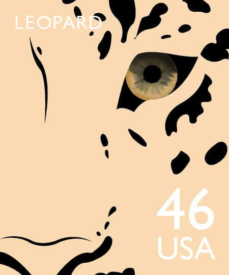
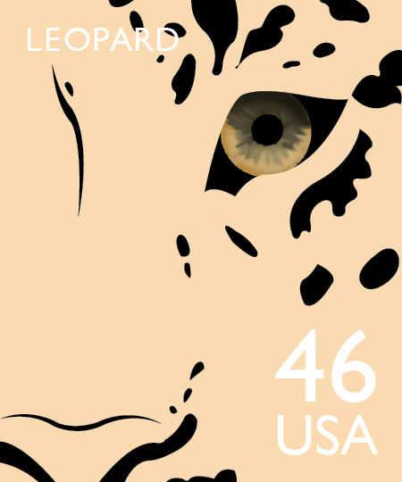

Endangered Species Stamp Set
This stamp set on endangered species focuses on at-risk felines. After studying these species, I found that many of the distinguishing factors about these animals were their eyes and markings. This became my concept. I wanted to represent endangered felines as unique, beautiful animals through their stunning eyes and markings.
 
